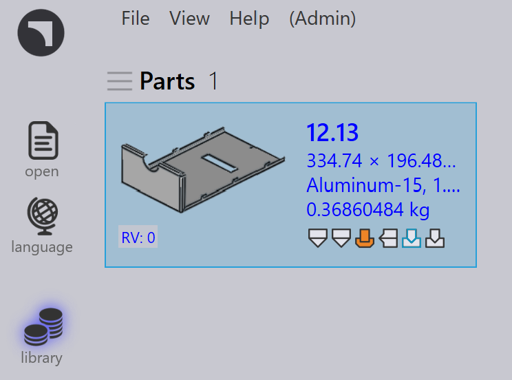

儲存零件
啟動 SolidWorks 並開啟鈑金零件 (.sldprt)。
然後依照以下步驟操作：
-
在 SolidWorks 中切換到 TruSmartCAM 標籤以存取 TruSmartCAM 工具列。
-
在 TruSmartCAM 工具列上按一下 儲存到 Praxis。
在 儲存到 Praxis 對話方塊中，選擇適當的 TruSmartCAM 原材料，然後按一下 確定 以上傳並將零件儲存到 TruSmartCAM 零件庫。

零件現在將儲存在 TruSmartCAM 中。

TruSmartCAM 包含一些位於 C:\Program
Files\Metamation\ TruSmartCAM \Samples\Parts 的範例零件。如有需要，您可以將其用於測試目的。
|
自動材料解析
此功能會在上傳期間自動將 SolidWorks 材料和零件厚度值轉換為對應的 TruSmartCAM 原材料。
若要配置材料對應：
-
在 TruSmartCAM 工具列上按一下 選項 以開啟 選項 對話方塊。

-
導覽至 材料映射 頁面。
-
在左窗格中，選擇一種 SolidWorks 材料。
-
在右窗格中，選擇對應的 TruSmartCAM 材料。
-
按一下 映射 以建立對應。
-
對應的配對會顯示在底部的對應清單中。
-
-
若要移除對應，請選擇它並按一下 取消映射。
厚度容差設定
厚度容差值定義了 TruSmartCAM 將 SolidWorks 的鈑金模型厚度與 TruSmartCAM 資料庫中現有原材料厚度進行匹配的容差範圍。它可以補償由設計四捨五入、單位轉換等造成的模型厚度的微小變化。
當 SolidWorks 零件厚度與 TruSmartCAM 中的材料不完全匹配時，容差值可確保自動選擇最接近的可用材料。
對於標稱 2.0 mm 材料和 0.05 mm 的容差值：
-
TruSmartCAM 接受 1.95 mm 到 2.05 mm 之間的任何 SolidWorks 模型厚度作為有效匹配。
-
超出此範圍的偏差將在零件上傳期間觸發手動材料選擇提示。
若要檢視或修改容差值：
-
在 TruSmartCAM 工具列上按一下 選項，然後導覽至 其他設定 以檢視容差值，現在按一下 儲存到 Praxis。

-
在 儲存到 Praxis 對話方塊中按一下 確定，零件將儲存到 TruSmartCAM。

讀取自訂零件屬性
此設定允許 TruSmartCAM 直接從 SolidWorks 零件檔案中自動讀取自訂零件資訊，例如 Material、Revision 和其他使用者定義的屬性。
若要進行設定：
-
在 TruSmartCAM 工具列上按一下 選項 以開啟 選項 對話方塊，然後導覽至 定制字段。

-
使用 映射 和 取消映射 按鈕將所需的 TruSmartCAM 欄位與對應的 SolidWorks Custom 或 Configuration 欄位連結。
| 顯示的值是從目前作用中的 SolidWorks 零件載入的。 |
-
對應完成後，每當在 TruSmartCAM 中匯入或更新零件時，所選的自訂屬性將自動從 SolidWorks 讀取，現在按一下 儲存到 Praxis。
| 此處定義的對應會儲存在 TruSmartCAM 儲存庫中，並在網路內的所有 TruSmartCAM SolidWorks 安裝中自動同步。 |
-
在 儲存到 Praxis 對話方塊中按一下 確定，零件將儲存到 TruSmartCAM。